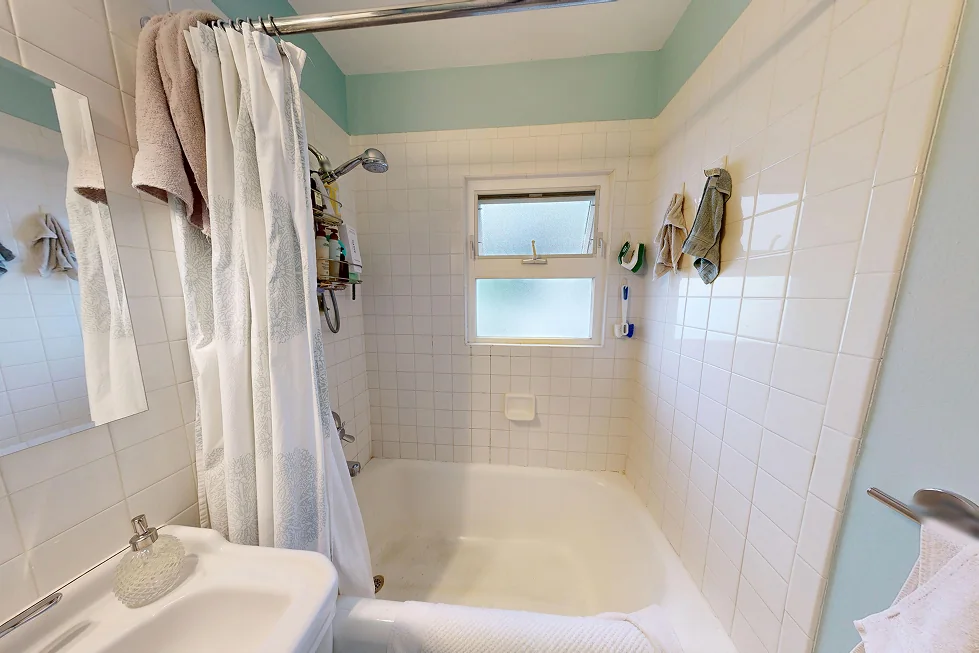
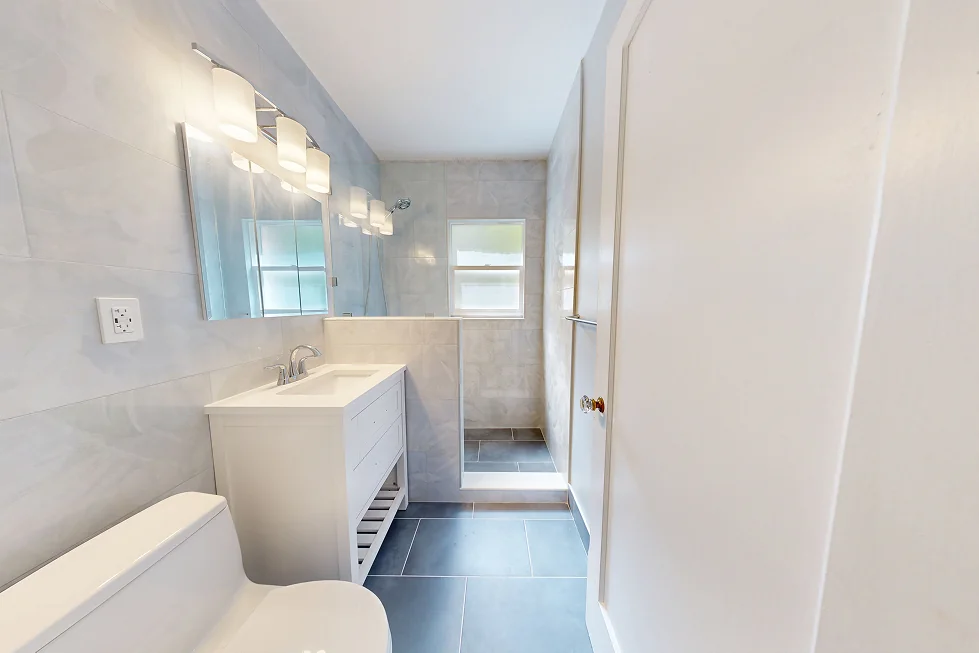

Reconstructed from project records · Approximate dimensions
Drag to turn · Scroll or pinch to zoom · Arrow keys to rotate
About this view
A narrow route connects the toilet, white vanity, tiled pony wall and window-lit shower.
Photos establish the sequence and finishes. The half-wall length, clearances and room dimensions are inferred; the model does not document the original pre-order renders.
The homeowner designed this bathroom. She chose the slate-blue floor, the chrome hardware and the tile that would cap the half wall. We helped her see the choices together, found fixtures that fit her 1928 condo, and built the room while she was abroad.
A half-height tiled wall separates the vanity from the shower. Clear glass above it keeps the end window visible from the doorway.
Blender reconstructionProject photograph
From the doorway, the white vanity has flat drawer fronts and an open slatted shelf below. Across the slate-blue floor, the tiled half wall screens the shower without cutting off light from the window.
The homeowner designed the room and chose every visible finish. DuetRight researched fixture clearances, built pre-order 3D renders, detailed the wet zone and built the bathroom.
A bathroom for the next twenty years
The cast-iron tub had a high side to climb over. The pedestal sink had nowhere for toiletries. They ended up in a cabinet over the toilet, which itself stood barely outside the swing of the door. On the first walkthrough she was still deciding whether to keep the tub. When she came back to the project, she'd decided that walking into a shower mattered more to her.
We researched toilets against the door clearance and sent her fixture options. We made 3D renders before she ordered tile so she could judge the floor, walls and fittings in the same view. That helped with small decisions too. She wanted the niche and top of the half wall finished in the wall tile she had chosen.
The original tub demanded a step over its wall at the start of every shower.
Building with the owner an ocean away
There was no garage at the condo for storing deliveries. Her materials shipped to our shop, where we received, labeled and held them until demolition. Having the pieces together meant the crew could match what was in front of them to what she had approved.
Behind the surround, we found rot around the bathroom window. We sent photographs and the proposed repair so she could approve the work remotely. She supplied the replacement window. We rebuilt its framing, flashed the sill and repaired the brickwork outside. The daylight in the final shower comes through that rebuilt opening.
The crew sets and flashes the new window inside the rebuilt rough opening
Getting the water to the drain
Removing the tub exposed a drain with poor pitch. We relocated it and corrected the slope. The crew reinforced the framing, added insulation and waterproofed the new shower assembly. The pan held water for a 24-hour test before we tiled it.
Her marble-look ceramic measures 12 by 36 inches. A horizontal layout with a one-third offset connects the wall, niche and low partition. The blue porcelain runs toward the shower entry. A single pane of frameless glass rises from the half wall, keeping the window visible from the far end of the bathroom.
The tiled niche and pony wall follow Cara's exact specifications.
The details she uses every morning
Four weeks later she came home to a lower shower entry, a vanity with drawers and a medicine cabinet recessed into the wall. The toilet clears the door. Above the mirror, the light sits low enough for her to change a bulb without finding a stool. Those are details she settled before leaving Seattle, visible now in a room she designed from the ground up.
Cara's picks work as one look: marble-look tile, a slate-blue floor, white vanity, and chrome at every touchpoint.
Before & after
See what changed.
Move the divider to compare the two photographs.


BeforeAfter↔
1928 condo bath, tub to walk-inOriginals BeforeAfter
Blender detail study
Glass over the tiled pony wall.
Reconstruction from project records · November 2026
A closer look in motion
Five-second Blender camera study · Glass over the tiled pony wall